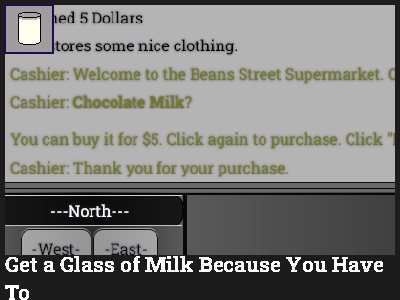

Get a Glass of Milk Because You Have To
By Rylie Eric (Agentperson)
Released on 8/24/2021
Drink milk all because some narrator forces you to. Or don't... not like he's gonna kill you or something. He's just the narrator.
Game Link - https://orteil.dashnet.org/igm/?g=qe3QE74B
Cheesecake (April 1st) Short Link - https://milkigm.linkh.at/cheesecake
Reddit Post - [Game] Get A Glass Of Milk Because You Have To
Reddit Post - Cheesecake - Totally Real Milk Game Spinoff
Universe page on Rylie Eric Website - https://rylieeric.neocities.org/universe/posts/Milk
Related Games
Walking Demo (Built Upon it)
Neapolitan (Chocolate features characters from this game)
Game Details
Get a Glass of Milk Because You Have To (usually shorten to Milk Game or jokingly GaGoMBYHT) is a game where you explore the city of Lint Yard to get a glass of milk (or not). There's humorous occurrences throughout filled some references and jokes. Also, there's a narrator following you. This game was posted in r/idlegammaker, DashNet, and Rylie's personal site (around when it was createdd#^@^&@*(#-
HEY GUYS! It's me. The narrator. Screw this site writer. I am writing this now.
Apparently, my existence's roots began when Director Rylee (or Rylie whatever idc) worked on Subject-022409 1927 from December 2019 to October 2020, which was meant to be a text-based game on IGM. It apparently featured the log and choices function and characters whom will later be used in Milk Game. I have no idea why Zack cares about it so much, but I guess the cancellation had something to do with it.
The Director then tried to make an RPG. I think you guys call it Idle Rising RPG Unfinished or something idk. I was never told about it. Within it, she tried to make a walking system and got a bug where buildings didn't show with south or west. She reached to the community to help fix that. A workaround was to make buildings appear with "." or currently "Inspect". I saw the bug myself actually when the game launched. It was only properly fixed in V2 (Gay Milk).
Actual development on Milk Game and when my involvement finally begins was on May 2021 under the original title "Get a Glass of Milk at 2am Because You Have To". Rylie played Get a Snack at 4am and thought "oh yes, I should make that." She took the Walking Demo and intended to make it in a few hours... the game still isn't finished.
I asked the Director this once and she said that the ideas just come to her naturally. This is how the game ended up how it is, for better or for worst...
(turns around shouting to rylie) Why isn't it just getting milk? (turns back)
The Director set a date for the project... August 24th! It was the end of the summer break for her and she thought it would be a good idea to do something for this game then, alongside a few other projects. The title was also shorten around this time, removing the "at 2am" part. It wasn't meant to be the full release, but people were actually expecting it to release then so it ended up happening. I was called on 4 months early just for you guys to screw up getting milk.
I'd say it has been decently popular in the community. It is the only game on here to be the way it is so it was probably bound to happen.
The Director abandoned us for a few months to do some stuff, but worked it some more form December 2021 to May 2022, and we got V2 or Gay Milk on June 1st with the bug fix, character bios and colors, text/css changes, 1 ending, and adjusted attack values. She then abandoned us again.
Milo took advantage of April Fool's 2023 and decided to remove all of us for a Rylie Eric sponsored April Fool's joke. There was a story about him and Ray being love that the Director cancelled prior so I don't know if it had anything to do with it.
The Director, for this game's 3rd birthday, decided to do a shadow V3 update (Labyrinths) that had like 1 ending, speed mode, and some other changes. I know this wasn't intentional, as Rylie around December has been promising updates ever since this released and at this point it isn't even funny.
The Director then came back for Neapolitan and left. I have no idea what to do with Nikki. I tried forcing the newbie to drink milk but failed because there was no Nikki in Milk Game. Apparently, it brings the idea of Milo x Ray romance back.
She came back again for a Cheesecake update, that updated it to V3 and added an extra ending. I tried submitting a joke review for it, but she rejected it, but not Zack's.
That brings us to now where I have no idea what she is doing. It has been several months now and I want to see a V4 AS SOON AS POSSIBLE! Stop with the false promises and give us the full thing now!!!
(Despite what it is suggested, these details were written by Rylie Eric)
